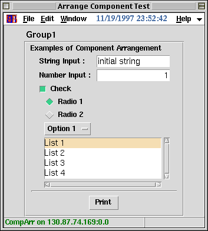

<!DOCTYPE HTML PUBLIC "-//W3C//DTD HTML 4.01 Transitional//EN">
<HTML lang="ja-JP">
<HEAD>
<META HTTP-EQUIV="Content-Type" CONTENT="text/html; charset=ISO-2022-JP">
<TITLE>KBFrame $BItIJ$NG[CV(B</TITLE>
</HEAD>

<BODY BGCOLOR="White" TEXT="Black" LINK="Blue" VLINK="Teal" ALINK="Red">

<A NAME="top" HREF="index-ja.html">$BL\<!(B</A>
<A HREF=statline-ja.html>Status Line</A>
<A HREF=dialog-ja.html>$BF~NOMQ%@%$%"%m%0%\%C%/%9(B</A>

<HR><DIV ALIGN="CENTER"><H2>$BItIJ$NG[CV(B</H2></DIV><HR>

<P>Frame[]$B$NCf$KItIJ$r;W$$DL$j$KG[CV$9$k$K$O!"$"$kDxEY$N9)IW$,I,MW$K(B
$B$J$j$^$9!#$=$N$h$&$J9)IWL5$7$G!":GDc8B$NItIJG[Ns$r(B
$B<B8=$9$k$K$O!"(BKBFComponentFrame$B$r;HMQ$7$^$9!#(B</P>

<PRE><CODE>
FFS;
w = KBMainFrame["CompArr", f, Title-&gt;"Arrange Component Test"];
s = "initial string"; n = 1; c = 1; r = 1; o = 1; l = 1;
cf = KBFComponentFrame[f,
  Add-&gt;{
    KBFGroup[Text-&gt;"Group1"],
    KBFText[Text-&gt;"Examples of Component Arrangement"],
    KBFString[Text-&gt;"String Input :", Variable:&gt;s],
    KBFNumber[Text-&gt;"Number Input :", Variable:&gt;n],
    KBFCheckButton[Text-&gt;"Check", Variable:&gt;c],
    KBFRadioButton[Items-&gt;{"Radio 1","Radio 2"}, Variable:&gt;r],
    KBFOptionMenu[Items-&gt;{"Option 1","Option 2","Option 3"}, Variable:&gt;o],
    KBFListBox[Items-&gt;{"List 1","List 2","List 3","List 4"}, Variable:&gt;l],
    KBFSeparator[],
    KBFButton[Text-&gt;"Print", Command:&gt;Print[{s,n,c,r,o,l}]]
  }
];
TkWait[];
</CODE></PRE>

<P>$B>e$N%3!<%I$r<B9T$7$?7k2L$O2<$N$h$&$K$J$j$^$9!#(B</P>

<P></P>

<P><A HREF="#top">top</A></P>

<HR>
<ADDRESS>$B$3$N%Z!<%8$K4X$9$k8f0U8+!&<ALd$O(B
<A HREF="mailto:samo.stanic@kek.jp">Samo Stanic</A>
$B$^$G(B.</ADDRESS>
</BODY>
</HTML>
